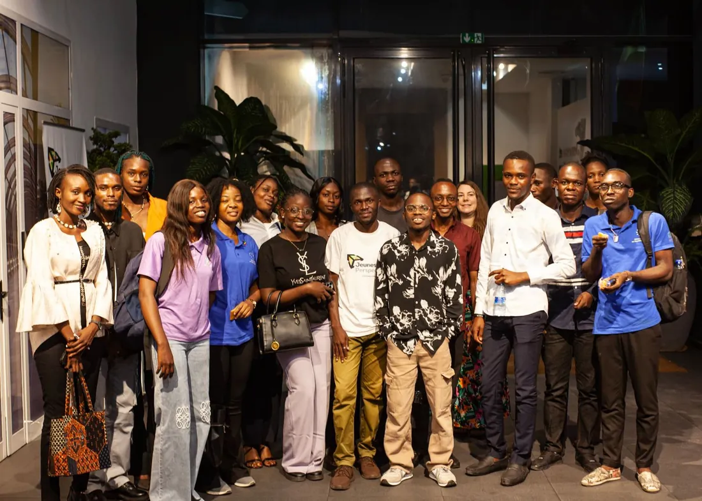
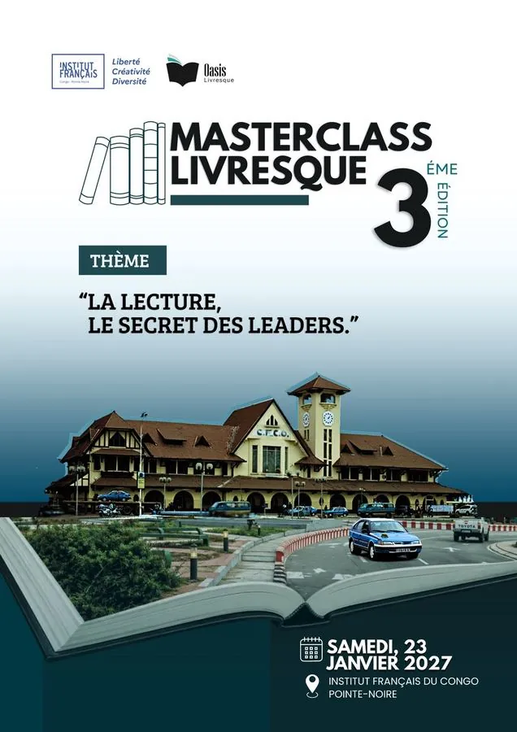
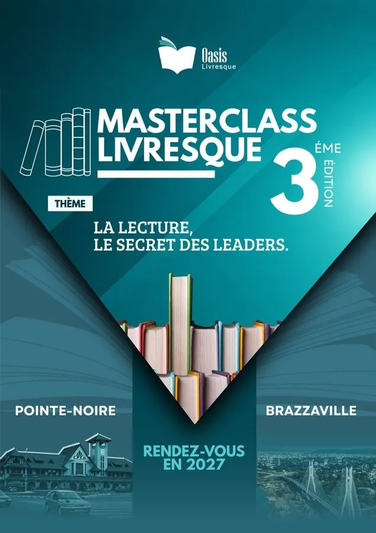
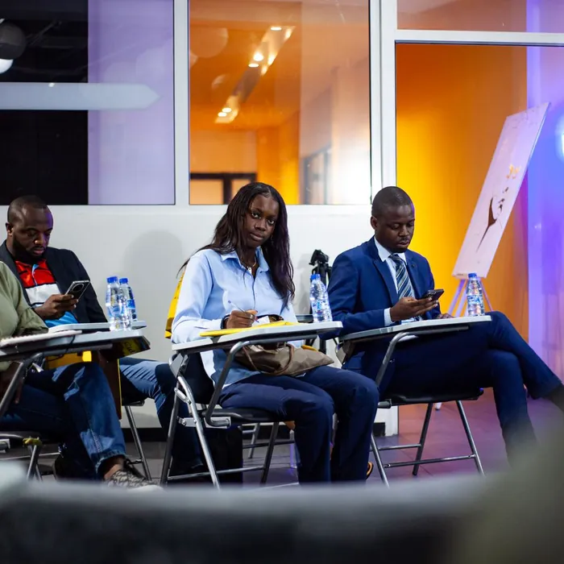
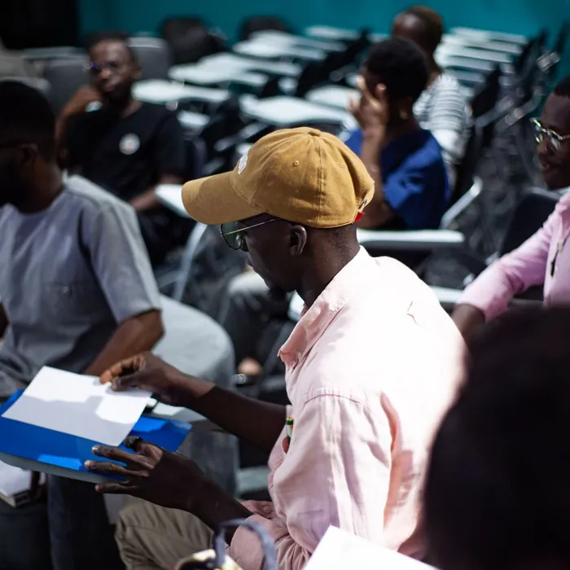
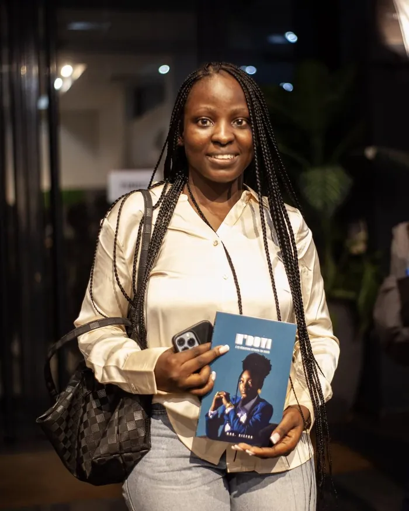
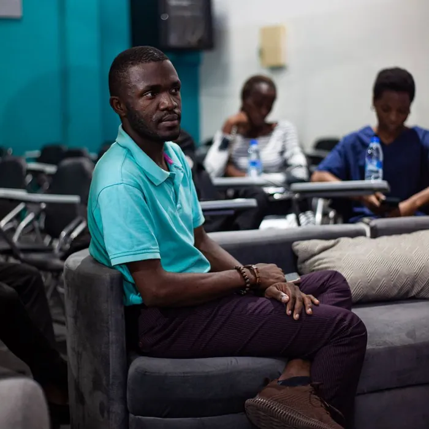

Oasis Livresque est une association dédiée à la promotion du livre, de la lecture et de la culture : des espaces où l’on peut découvrir, lire, échanger et partager autour des livres et des idées.
Notre vision : une société où le livre est accessible, la lecture valorisée et les idées mises en circulation.
Promouvoir la lectureEsprit critiqueLecture & leadershipActeurs du livreCréation & actionCommunauté

01 — L’édition
Deux villes, une même ambition.
Après deux éditions consacrées à la place de la lecture, la troisième interroge ce que nous faisons de ce que nous lisons : lire pour comprendre, penser, construire et agir.
Première étape
Pointe-Noire
Samedi 23 janvier 2027 · Institut Français du Congo. Demi-journée conçue avec le club Envie de Lire.
23.01
Temps fort
Brazzaville
Journée d’ateliers le 5, Masterclass le 6.
05–06.02
Informations pratiques
Pointe-Noire
Date
Samedi 23 janvier 2027
Lieu
Institut Français du Congo, Pointe-Noire
Horaires
À annoncer
Conditions d’accès
À annoncer
Brazzaville
Dates
Vendredi 5 et samedi 6 février 2027
Lieu
À annoncer
Horaires
Ateliers du 5 février : 10h–12h30, 13h–15h et 15h–17h (voir le programme). Masterclass du 6 février : à annoncer
Conditions d’accès
Ateliers du 5 février : PAF 5 000 FCFA par atelier, places limitées. Masterclass du 6 février : à annoncer


Avant l’étape de Pointe-Noire
02 — En chiffres
Une communauté qui grandit.
500+participants sur deux éditions
25+intervenants mobilisés
24mois d’activités autour du livre
23auteurs locaux accueillis
23+rendez-vous du Club de lecture
03 — Souvenirs
Le livre, accroché au mur.

Prendre note

Concentration

Le livre en main

Échanger
04 — Thématiques
Cinq gestes, un seul livre.
Que faisons-nous de ce que nous lisons ?
05 — Programme
Lire, réfléchir, rencontrer, agir.
Déroulé · Pointe-Noire · 23 janvier 2027
Les intervenants, page après page.
Touchez ou faites glisser pour tourner la page.
06 — Sur scène
Quand la lecture prend vie.
07 — Le Club de lecture
Un livre, chaque mois.
Depuis octobre 2024, chaque dernier vendredi du mois, des lecteurs se retrouvent autour d’un ouvrage et échangent avec un auteur local.
Lire, ensemble
Un ouvrage lu au fil du mois.
Échanger sans filtre
Confronter les points de vue.
Rencontrer un auteur
23 auteurs locaux accueillis.
Une pratique régulière
Le livre toute l’année.
01 / 04
Archives
Deux éditions, une conviction qui grandit.
Édition 1 · 18 janvier 2025
« L’importance de la lecture dans le développement personnel et professionnel »
Les fondations du projet : la lecture comme outil de développement, devant des participants aux profils et aux rapports au livre très différents.
Édition 2 · 7 février 2026
« Lire, c’est pas que pour les intellos »
Déconstruire l’image d’une lecture réservée à une élite : chacun peut trouver sa propre porte d’entrée vers le livre.
Club de lecture · depuis octobre 2024
Chaque dernier vendredi du mois
Un ouvrage lu, des points de vue confrontés et un échange direct avec un auteur local.
08 — Partenaires
Construire ensemble la prochaine étape.
Un partenariat ne se résume pas à un logo : chaque partenaire trouve sa place dans une dynamique qui dépasse les journées de l’événement.
Partenaires financiers
Logistique, communication, prise en charge des intervenants, outils pédagogiques et accueil : soutenir la gratuité de l’événement.
Entreprises · Fondations
Partenaires institutionnels
Renforcer la portée de l’événement et créer des passerelles avec les politiques autour du livre et de la jeunesse.
Institutions · Culture · Éducation
Partenaires culturels & du livre
Valoriser les acteurs du secteur et faciliter l’accès aux ouvrages et aux rencontres.
Éditeurs · Librairies · Clubs
Image —s’associer à une initiative culturelle tournée vers la jeunesse.
Communauté —lecteurs, jeunes, auteurs et acteurs culturels.
Visibilité —supports, réseaux sociaux, Village du Livre.
Réseau —rencontres entre entreprises, institutions et jeunes.